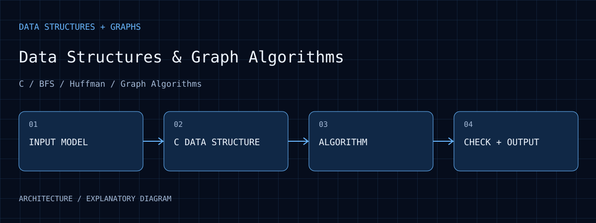
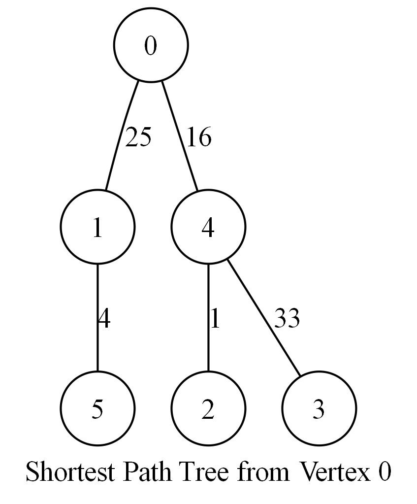

Primary versions
The 2026-10-05 record reports 14/14 primary builds and 18/18 representative behavior checks passing.
Data Structures & Graph Algorithms
Nine C assignments covering sorting, BFS maze search, sparse matrices, segment trees, Huffman coding, minimum spanning trees, and Dijkstra, with report figures and complexity analysis.

01 / PURPOSE
Understand how data structures affect memory usage, operation costs, and algorithm choices.
02 / ARCHITECTURE
Nine assignments model dates, sequences, mazes, matrices, expressions, text and graphs.
C implementations use queues, linked lists, stacks, segment trees, min-heaps and adjacency lists.
Sorting, BFS, Huffman, Kruskal and Dijkstra match different problem requirements.
Text, compressed files and Graphviz views expose results, supported by representative verification tools.
03 / WORKFLOW
Define the format and data-structure invariants.
Choose search, sorting, relaxation or merging according to operation cost.
Compare paths, matrices, codes or graphs against small examples.
Read complexity, archived timings and known specification gaps together.
04 / EVIDENCE
The 2026-10-05 record reports 14/14 primary builds and 18/18 representative behavior checks passing.
Including drafts, 67/68 C files compile. A broken function name in the sparse-matrix input.c draft is the remaining failure.
Nine assignments retain 162 report figures, with original graphs and shortest-path trees for multiple sources.

Compare with the original graph to inspect paths from source 0. This is not an MST, and is not assumed to be the same run as other archived input files.
Open full size ↗05 / ANALYSIS
A shortest-path tree minimizes distance from one source; an MST minimizes total weight connecting all vertices. Similar-looking tree outputs are not interchangeable.
This Dijkstra uses linear selection, so heap-based complexity does not apply. The sorting source also relies on GNU nested functions.
Huffman files do not store their decoding tree and undefined calculator variables become zero. These limitations affect portability and error behavior despite passing examples.
06 / REPRODUCE
07 / LIMITS
Earlier code and known limitations remain visible. Historical timings are not new measurements, and passing samples does not establish complete specification coverage.
08 / SOURCES
Selected photographs and plots retain their original content. Captions identify prototype, archived, analysis or simulation material.